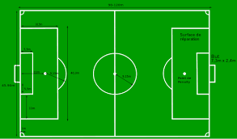

L'histoire du football rend compte de la naissance et de l'évolution du football, un sport collectif né au milieu du xixe siècle en Grande-Bretagne qui est devenu au siècle suivant le plus populaire au monde.
Les racines que ce sport partage avec d'autres jeux de « football » remontent au Moyen Âge. Il est l'héritier de la soule médiévale, pratiqué notamment dans le Nord-Ouest de la France et dans les îles Britanniques, et du Calcio florentin, des jeux caractérisés par leur violence et leur peu de règles.
Au début du xixe siècle, les écoles anglaises intègrent progressivement le sport à leur cursus et impulsent sa formalisation. Les règles de Cambridge sont en octobre 1848 une première tentative d'unification des règles du football. Les premiers clubs indépendants apparaissent à la fin des années 1800 ; en 1863, onze d'entre eux fondent the Football Association, chargée d'organiser la pratique du football en Angleterre. Elle publie peu après les premières « Lois du jeu » (en anglais : Laws of the Game), largement inspirées par celles de Cambridge.
Dès lors, le football connait une progression continue dans sa pratique. En 1885, le professionnalisme est autorisé en Grande-Bretagne, tandis que les premiers clubs sont créés à travers le monde, particulièrement en Europe et en Amérique du Sud. La Fédération internationale de football association (FIFA) est fondée en 1904 à Paris par des représentants de sept pays européens. Encouragée par le succès populaire rencontré par les tournois de football aux Jeux olympiques, la FIFA organise en 1930 la première édition de la Coupe du monde, qui devient un des principaux événements sportifs planétaires.